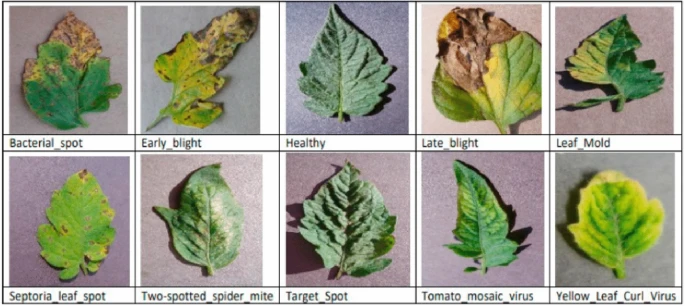

Results
| Model | Accuracy (%) | Precision | Recall | F1-Score |
|---|---|---|---|---|
| ResNet50 | 99.5 | 0.98 | 0.99 | 0.98 |
| MobileNetV2 | 98.7 | 0.97 | 0.98 | 0.97 |
| Vision Transformer (ViT) | 95.5 | 0.94 | 0.95 | 0.94 |
Example Dataset Images
Example of a healthy tomato leaf and a leaf infected with late blight.

Example of a healthy apple leaf and a leaf infected with apple scab.